FinTrust Business & Data Intelligence
A practical banking analytics case study transforming customer and transaction data into meaningful KPIs, business questions, risk analysis and an executive-ready dashboard.
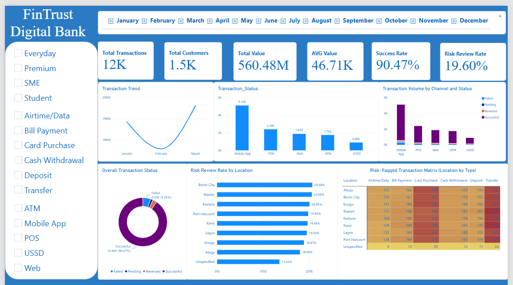
From raw data to business intelligence
The project is structured around practical management questions: customer behaviour, transaction performance, channel usage, transaction value, status and risk.
Decision support
Translate operational data into measures that can support monitoring, investigation and planning.
Two connected datasets
12,000 transaction records are connected to 1,500 customer records through Customer_ID.
Management dashboard
Excel / Power BI analysis includes profiling, KPI calculations, segmented analysis, validation checks and dashboard views.
Questions behind the analysis
The dashboard is the final layer of a broader analytical process.
Customer behaviour
Which customer segments and account types contribute most to activity and value?
Transaction activity
How does transaction volume change over time and by transaction type?
Channel performance
Which channels generate the most usage and value, and how do success rates compare?
Risk patterns
How do risk-review flags vary by transaction type, location and international status?
Transaction value
What is the distribution of transaction amounts and where are high-value transactions concentrated?
Status performance
What proportion of transactions are successful, failed, reversed or pending?
Data quality & preparation
A rigorous initial data-quality audit was executed across FinTrust_Customer_Data.xlsx (1,500 records, 12 columns) and FinTrust_Transaction_Data.xlsx (12,000 records, 11 columns).
Transaction dataset
12,000 records · 11 columns
Customer dataset
1,500 records · 12 columns · 0 missing values
Data quality audit findings
100% match on Customer_ID. Every customer has transaction activity.
Missing attributes: 96 Device_Type + 96 Location missing. 188 rows have ≥1 missing attribute; 4 rows missing both.
Amount distribution: right-skewed — Mean ₦46,706.45 · Median ₦10,305.94 · Std Dev ₦86,028.72.
High-value outliers are concentrated in Deposit (max ₦693,454.45) and Transfer (max ₦449,576.35). No zero or negative amounts.
Data cleaning strategy · Excel / Power Query
Missing values: Device_Type and Location imputed as “Unspecified” to prevent silent row exclusion during GROUP BY aggregations.
Key standardization: Customer_ID retained as primary join key; Customer_Name avoided due to name-collision risk.
Data types: Transaction_DateTime confirmed as datetime64[ns]; Amount_NGN as floating-point numeric.


From data-quality audit to management insight
This section incorporates the FinTrust Customer & Transaction Analytics report: rigorous data-quality assessment, Excel/Power Query preparation, SQL business analysis, management interpretations and Power BI/DAX setup.
FinTrust Data at a glance
Customer dataset: 1,500 records · 12 columns | Transaction dataset: 12,000 records · 11 columns.
Customer data contains 0 missing values. Transaction data contains 96 missing Device_Type values and 96 missing Location values; 188 transaction records contain at least one missing attribute, including 4 records missing both fields.
Record & column counts
Customers: 1,500 records, 12 columns.
Transactions: 12,000 records, 11 columns.
Duplicate audit
0 exact duplicate rows in both datasets. All 1,500 Customer_IDs and 12,000 Transaction_IDs are unique.
Relational integrity
100% Customer_ID relational match. Every customer in the customer master table has transaction activity.
Data-type & format integrity
Transaction_DateTime: correctly stored as datetime64[ns], covering 2026-01-01 to 2026-03-31.
Amount_NGN: floating-point numeric, ranging from NGN 100.17 to NGN 693,454.45. No zero or negative amounts were detected.
Outliers & value distribution
Amount_NGN is right-skewed: Mean NGN 46,706.45, Median NGN 10,305.94, Std Dev NGN 86,028.72.
High-value outliers are concentrated in Deposit (maximum NGN 693,454.45) and Transfer (maximum NGN 449,576.35).
Data cleaning strategy applied in Excel / Power Query
Missing values
Device_Type and Location were imputed as “Unspecified” to prevent silent row exclusion during GROUP BY aggregations.
Standardized keys
Customer_ID was maintained as the primary join key rather than Customer_Name because of name-collision risks.
Integration
The customer and transaction datasets were prepared for relational analysis using the common Customer_ID key.
Business questions, results & interpretation
1. Activity & value by customer segment
| Segment | Customers | Txns | Total Value | Avg Value |
|---|---|---|---|---|
| Everyday | 711 | 5,644 | NGN 261,458,926.49 | NGN 46,325.11 |
| Premium | 295 | 2,361 | NGN 107,751,208.64 | NGN 45,637.95 |
| Student | 278 | 2,289 | NGN 107,475,888.72 | NGN 46,953.20 |
| SME | 216 | 1,706 | NGN 83,791,330.99 | NGN 49,115.69 |
Interpretation: Everyday dominates volume (47.03%) and total value (46.65%). Average transaction values remain relatively uniform at about NGN 45.6k–NGN 49.1k. The source report notes this may indicate SME customers splitting operational transactions or using personal accounts.
2. Monthly transaction volume & value
| Month | Transactions | Total Value | Avg Value |
|---|---|---|---|
| 2026-01 | 4,133 | NGN 188,489,418.57 | NGN 45,605.96 |
| 2026-02 | 3,734 | NGN 175,786,929.80 | NGN 47,077.37 |
| 2026-03 | 4,133 | NGN 196,201,006.48 | NGN 47,471.82 |
Interpretation: February had a temporary 9.65% transaction-count dip, partly because it has 28 days. Average transaction size rose from NGN 45,605.96 in January to NGN 47,471.82 in March, with March recording the highest monthly gross throughput at NGN 196.2M.
3. Channel usage, gross value & success rate
| Channel | Txns | Value | Success |
|---|---|---|---|
| Mobile App | 5,102 | NGN 240,104,394.02 | 89.75% |
| POS | 2,393 | NGN 104,346,742.66 | 90.85% |
| Web | 1,869 | NGN 89,325,003.38 | 90.85% |
| ATM | 1,747 | NGN 83,942,349.56 | 91.70% |
| USSD | 889 | NGN 42,758,865.23 | 90.33% |
Interpretation: Mobile App is the primary growth engine, representing 42.5% of transactions and NGN 240.1M processed, but it has the lowest success rate. The report identifies infrastructure stabilization on Mobile App API endpoints as a potential way to prevent revenue leakage.
4. Risk review flag vs transaction status
| Risk Flag | Total | Successful | Failed | Reversed | Pending |
|---|---|---|---|---|---|
| No | 9,648 | 8,767 | 460 (4.77%) | 266 | 155 |
| Yes | 2,352 | 2,089 | 170 (7.23%) | 60 | 33 |
Interpretation: Flagged transactions have a higher failure rate (7.23% vs 4.77%), while 88.82% of flagged transactions still settle successfully. The report interprets this pattern as evidence consistent with an asynchronous post-transaction scoring flag or non-blocking alert.
5. Domestic vs international risk profile
| Scope | Txns | Value | Avg | Risk Rate |
|---|---|---|---|---|
| Domestic | 11,520 | NGN 540,481,570.61 | NGN 46,916.80 | 18.88% |
| International | 480 | NGN 19,995,784.24 | NGN 41,657.88 | 36.88% |
Interpretation: Cross-border transactions have nearly double the risk-review rate. Because the international average ticket is slightly lower than domestic, the report attributes the pattern to geographic location/IP flags rather than raw transaction size.
6. Performance & risk by transaction type
| Type | Txns | Value | Avg | Risk |
|---|---|---|---|---|
| Transfer | 3,549 | NGN 237,916,703.11 | NGN 67,037.67 | 28.49% |
| Deposit | 1,328 | NGN 130,985,063.85 | NGN 98,633.33 | 16.19% |
| Card Purchase | 3,033 | NGN 85,863,413.11 | NGN 28,309.73 | 13.02% |
| Cash Withdrawal | 1,430 | NGN 67,772,362.11 | NGN 47,393.26 | 25.31% |
| Bill Payment | 1,475 | NGN 28,163,647.51 | NGN 19,094.00 | 12.81% |
| Airtime/Data | 1,185 | NGN 9,776,165.16 | NGN 8,249.93 | 15.19% |
Interpretation: Transfers represent 42.45% of total value and have the highest risk-review rate (28.49%), followed by Cash Withdrawals (25.31%). The source recommends focusing surveillance rules on Transfers and Cash Outflows.
7. Channel adoption across income bands
Top-income band (1m+): Mobile App — 467 transactions / NGN 19.46M; POS — 208; Web — 167; ATM — 151; USSD — 82.
Interpretation: Mobile App remains the dominant channel across income bands, including high-net-worth and lower-income users. USSD is distributed across income groups rather than being limited to lower-income customers, supporting its role as a universal fallback during mobile-data outages.
8. Geographic risk distribution
| City | Txns | Flagged | Risk | Value |
|---|---|---|---|---|
| Benin City | 1,451 | 300 | 20.68% | NGN 63.39M |
| Ibadan | 1,550 | 319 | 20.58% | NGN 81.42M |
| Kaduna | 1,481 | 297 | 20.05% | NGN 70.38M |
| Port Harcourt | 1,520 | 301 | 19.80% | NGN 71.38M |
| Kano | 1,526 | 300 | 19.66% | NGN 74.41M |
| Lagos | 1,431 | 279 | 19.50% | NGN 63.98M |
| Enugu | 1,484 | 280 | 18.87% | NGN 69.10M |
| Abuja | 1,461 | 263 | 18.00% | NGN 62.05M |
Interpretation: Risk rates range from 18.00% to 20.68% across the major Nigerian hubs. The report concludes that there are no extreme geographic spikes and that triggers appear systemic or rules-based across national channels.
Additional management insights
Cross-border transactions suffer a dual penalty
Of 480 international transactions, 177 were flagged. Their average ticket was NGN 41,657.88 versus NGN 46,916.80 domestically. The report suggests refining the fraud-prevention engine with 3D-Secure tokens rather than relying heavily on location rules.
SME sizing suggests product misalignment
SME customers average NGN 49,115.69 per transaction, close to Everyday (NGN 46,325.11) and Student (NGN 46,953.20). The report suggests structured SME tiers with higher single-transaction limits and integrated batch-payment invoicing.
Non-blocking risk review creates settlement exposure
2,089 of 2,352 risk-flagged transactions (88.82%) successfully settle. The report describes the current mechanism as alerting rather than real-time control and proposes real-time scoring at authorization to mitigate fraud exposure.
Mobile App dominance vs sub-par success
Mobile App accounts for 42.52% of total volume (5,102 transactions) but has an 89.75% completion success rate. 523 transactions failed, reversed or remained pending, a 10.25% error rate.
SQL query evidence & supporting analysis
The complete evidence set is retained below, with all original query screenshots included.
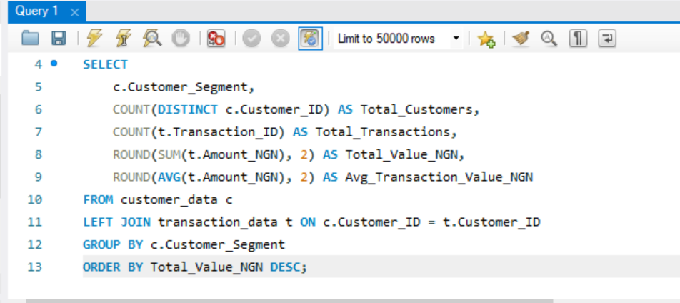
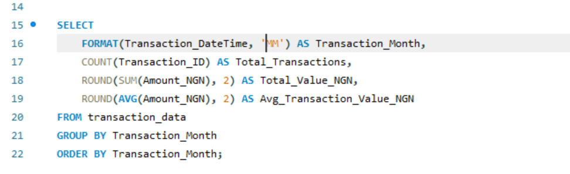
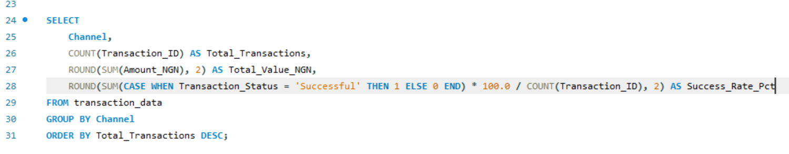
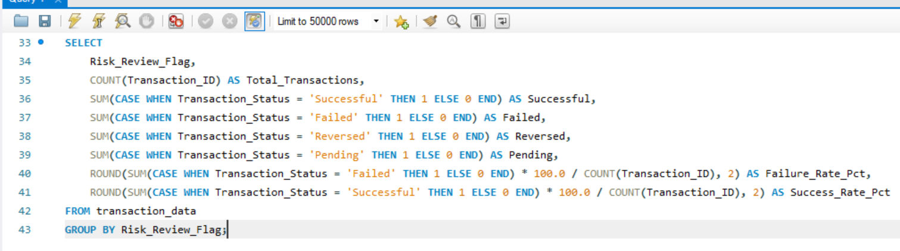
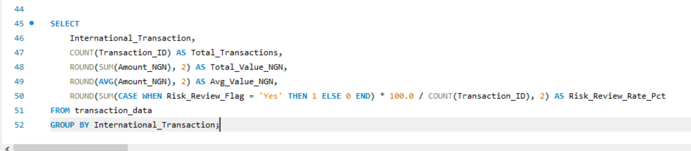
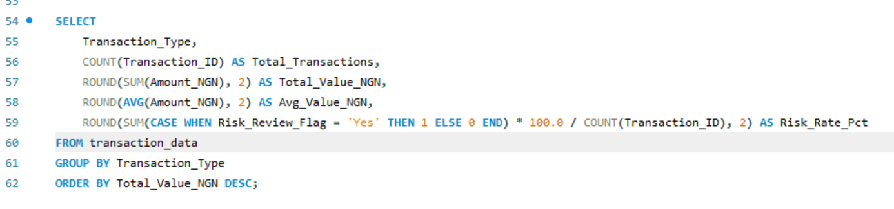
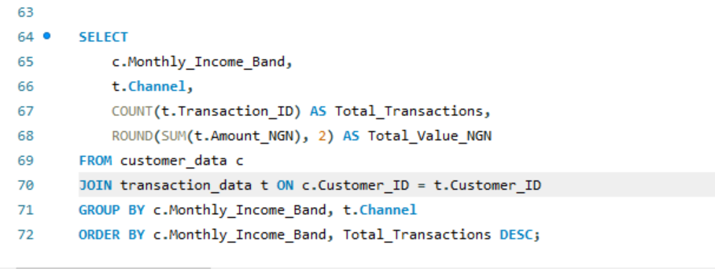
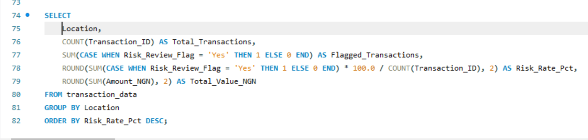
Power BI evidence & supporting analysis
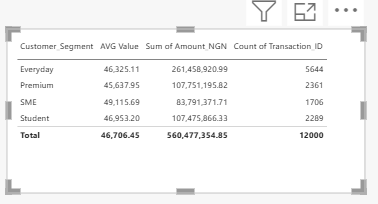
.png)
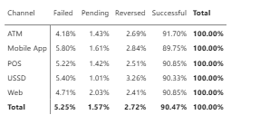
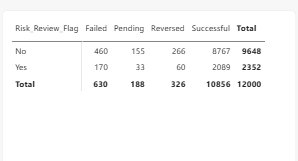
.png)
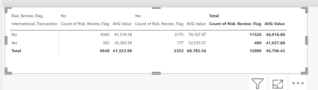
Management-ready observations
Descriptive findings and actionable interpretations from the completed analysis.
Mobile App leads activity
5,102 transactions (42.5% of volume) and ₦240.1M processed — yet the lowest success rate at 89.75%. API latency and timeout issues disproportionately harm customer trust.
Transfers drive value & risk
Transfers = 42.45% of total value (₦237.9M) and highest risk rate (28.49%). Cash withdrawals follow at 25.31%.
Non-blocking risk architecture
88.82% of flagged transactions still settle. The system acts as an alert rather than real-time control, creating potential chargeback exposure.
Dual penalty on international
Risk rate nearly doubles (36.88% vs 18.88%). Rules appear driven by location/IP headers. The source analysis suggests integrating 3D-Secure tokens.
Product misalignment signal
SME average ticket (₦49.1k) mirrors retail segments. Opportunity for dedicated SME packages with higher limits and batch invoicing.
Even risk distribution
Risk rates range only 18–20.7% across eight major cities. Triggers appear systemic rather than location-specific.
Excel & Power BI analysis
The project workbook combines KPI cards, trends, channel analysis, customer/account views, location analysis and status/risk summaries. Power BI DAX measures were also defined for interactive exploration.
Dashboard coverage
12K txns · 1.5K customers · ₦560.48M · 90.47% success · 19.60% risk
Power BI data model & core DAX measures
Total Customers = DISTINCTCOUNT(customers[Customer_ID])
Total Transactions = COUNT(transactions[Transaction_ID])
Total Value = SUM(transactions[Amount_NGN])
AVG Value = AVERAGE(transactions[Amount_NGN])
Success Rate = CALCULATE(COUNT(transactions[Transaction_ID]),
transactions[Transaction_Status]="Successful")
/ [Total Transactions]
Risk Review Rate = CALCULATE(COUNT(transactions[Transaction_ID]),
transactions[Risk_Review_Flag]="Yes")
/ [Total Transactions]How the project was built
A repeatable workflow from business understanding through validation and presentation.
Business understanding
Defined business questions, decisions supported and relevant stakeholders.
Data profiling & quality audit
Reviewed records, fields, data types, missing values, duplicates, relationships and outliers.
Data cleaning & integration
Imputed missing Device_Type/Location as “Unspecified”. Joined transaction and customer data on Customer_ID.
KPI and analysis design
Defined measures for transactions, value, success, risk, customers, channels, status and geography.
SQL analysis & validation
Built segmented queries and reconciliation checks to verify totals and breakdowns.
Dashboard storytelling
Converted findings into an executive-friendly visual summary (Excel + Power BI) and portfolio case study.
Skills demonstrated
Practical analytics capabilities demonstrated through the project.
The analytical goal
The goal was not simply to calculate numbers, but to structure data so management can ask better questions, monitor performance and investigate areas requiring attention.
Vitalis Ndung'u Gitonga
Data Analyst · Statistical Analysis · AI & Data Operations